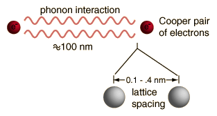
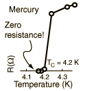

Ideas Leading to the BCS Theory
|
 |
The BCS theory of superconductivity has successfully described the measured properties of Type I superconductors. It envisions resistance-free conduction of coupled pairs of electrons called Cooper pairs. This theory is remarkable enough that it is interesting to look at the chain of ideas which led to it.
|
- One of the first steps toward a theory of superconductivity was the realization that there must be a band gap separating the charge carriers from the state of normal conduction.
|
 |
- A band gap was implied by the very fact that the resistance is precisely zero. If charge carriers can move through a crystal lattice without interacting at all, it must be because their energies are quantized such that they do not have any available energy levels within reach of the energies of interaction with the lattice.
- A band gap is suggested by specific heats of materials like vanadium. The fact that there is an exponentially increasing specific heat as the temperature approaches the critical temperature from below implies that thermal energy is being used to bridge some kind of gap in energy. As the temperature increases, there is an exponential increase in the number of particles which would have enough energy to cross the gap.
|
- The critical temperature for superconductivity must be a measure of the band gap, since the material could lose superconductivity if thermal energy could get charge carriers across the gap.
- The critical temperature was found to depend upon isotopic mass. It certainly would not if the conduction was by free electrons alone. This made it evident that the superconducting transition involved some kind of interaction with the crystal lattice.
- Single electrons could be eliminated as the charge carriers in superconductivity since with a system of fermions you don't get energy gaps. All available levels up to the Fermi energy fill up.
- The needed boson behavior was consistent with having coupled pairs of electrons with opposite spins. The isotope effect described above suggested that the coupling mechanism involved the crystal lattice, so this gave rise to the phonon model of coupling envisioned with Cooper pairs.
|
Index
Superconductivity concepts
Reference Rohlf,Ch 15 |